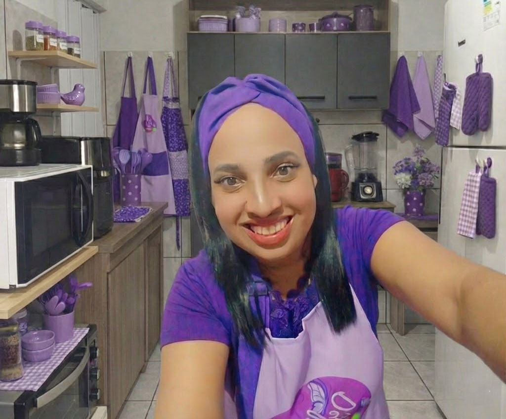

Sabor Caseiro com Toque de Chef
Receitas artesanais, ingredientes selecionados e experiências memoráveis. Descubra o verdadeiro sabor da confeitaria com a Chef Karina.
Receitas artesanais, ingredientes selecionados e experiências memoráveis. Descubra o verdadeiro sabor da confeitaria com a Chef Karina.

Receitas caseiras, fofas e cheias de sabor para adoçar o dia a dia.
Ver Opções
Bolos recheados com coberturas generosas para momentos inesquecíveis.
Explorar
Banoffee, tortas, pudins e delícias geladas para finalizar qualquer refeição.
Ver Sobremesas
Brigadeiros gourmet, brownies, cones e mini cheesecakes para toda ocasião.
Ver Doces
Opções sem lactose e sem açúcar para quem quer equilíbrio sem abrir mão do sabor.
Ver Linha FitAos 40 anos, Karina decidiu transformar sua paixão em profissão. Em 2022, deixou o serviço público em Embu-Guaçu para se dedicar integralmente à confeitaria e pâtisserie.
A Deliká nasceu como um projeto familiar, construído ao lado da mãe e do esposo. Cada receita carrega técnica, afeto e atenção aos detalhes.
Da identidade visual ao acabamento dos bolos, tudo é pensado para criar experiências marcantes. O resultado é uma confeitaria artesanal com personalidade e assinatura própria.
"Transformando momentos em doces memórias!"
